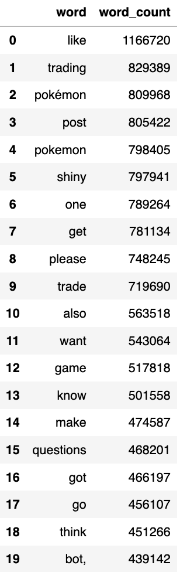

Milestone 2: add external data and run NLP
Coding Notebooks
NLP Processing and Sentiment Model
Executive Summary
|
Figure 1. Number of sentiments in top 5 Pokémon subreddits
|
Table 1. Number of sentiments of the newest Pokemon anime
|
Analysis Report
- Natural Language processing Work
|
Figure 2. Comments length distribution
Before proceeding to the NLP cleaning steps, let us examine the distribution of comments length. As comment length becomes longer, the counts gradually drop. That suggests that the majority of comments are relatively short and people seldom write long comments in online social communities. The fact augments the difficulty for further tasks such as text classification. Since there might not exist enough context information for the model to decide which class the comments belong to. |
Table 2. Top 20 most common words

|
NLP Cleaning
- Remove URL links
- Remove ('s), ('ll), ('ve), ('m), ('re)
- Remove punctuation and special characters
- Remove extra white space
- Tokenization
- Normalize word frequencies
- Remove stopwords
- Lemmatization
- Sentiment Result Analysis
7. What is the overall attitude for Pokémon in related subreddit?
The business goal includes performing sentiment analysis on Pokemon subreddits posts and determining the overall attributes in each subreddits. All the subsequent analyses conducted regarding NLP and sentiment analysis of the Pokemon subreddits posts fulfilled our goal. Insights and findings are presented in the following paragraphs.
|
Tabel 3. Number of sentiments by subreddit
After TF-IDF and NLP cleaning towards comments, we produced two tables using dummy variables. For Tabel 3, the subreddit pokemon receives the most greatest of comments among all top subreddits. The ratio of positive sentiments for pokemon, pokemontrades, and PokemonSwordAndShield are 59.20%, 77.71%, and 70.05%. The number of negative views of the subreddit pokemongo and PokemonTCG is higher than the other subreddits. These two games, as critical projects, have received many negative comments. First, we boldly speculate that the source of negative comments may be the game's mechanism, difficulty, or quality. For Tabel 4, From November 2021 to January 2022, the number of sentiments is significantly greater than in other months. We speculate that it is because of the player interaction events of Pokemon Go. Pokémon GO Community Day is a monthly in-game event that features specific Pokémon through limited-time increased spawn rates and obtainable exclusive moves. On January 4, 2022, Niantic announced Community Day Classic, which is the return of previous Community Days. Another possible reason is the release of two new Pokémon games: Pokémon Brilliant Diamond & Shining Pearl on November 19, 2021, and Pokémon Legends: Arceus on January 28, 2022. After this period, the number gradually decreases to normal level. |
Table 4. Number of sentiments over months
|
To gain further insight into the sentiment results over time, we produced two plots for each subreddit, positive and negative. February 27th, 2021 is the 26th anniversary of Pokemon. Thus, major releases and announcements regarding the series will be released on or around that specific day. That explains why the number of positive sentiments went up on February 26th. The same reason holds for the increase in February 2022, which suggests that annual product events can burst interest among fans and related social communities. The number of positive sentiments increases around November 2021 for most of the top 5 subreddits. Mainly because of a bunch of new releases and updates. August 2022, Pokemon World Championships for PokemonTCG. Another significant community event brought up interest among followers and the general public.
In preparation for celebrating the Pokemon anniversary on February 27th, the Pokemon Company featured a Pokemon Presents presentation on February 26th, 2021. The presentation introduces the latest updates on Pokemon products, such as Pokemon Snap and Pokemon Sword and Shield, as well as the releases of new games, such as the remakes of Pokemon Brilliant Diamond and Pokemon Shining Pearl. As the annual event boosted positive discussions among the Reddit communities, it might also bring up the number of negative talks among the top subreddits. It's worth noting that these Pokemon Presents received more negative sentiments than positive ones on Reddit on February 26th, 2021. This indicated people's dissatisfaction with future Pokemon new products. Thus, an annual event must be designed carefully and wisely to attract worldwide fans.
|
Figure 5. Wordcloud of positive sentiments
|
Figure 6. Wordcloud of negative sentiments
|
|
Furthermore, to have the overall view of each sentiment, we produced two word clouds using the comments in the top 5 Pokemon subreddits. Apart from the center word 'Pokemon' and 'game,' the positive sentiments mainly include positive words such as 'like,' 'best,' and 'love,' which makes sense intuitively. An interesting phenomenon is that action words like 'would,' 'get,' 'make,' and 'think' appears much more frequently than expected. Comments like 'design,' 'ability,' and 'evolution' also reflect the players' recognition of these aspects of the game. For Figure, Given the chosen topic, words like 'Pokemon' and 'game' show higher frequencies than others. Word 'like' seems somewhat weird here among comments with negative sentiments. The major drawback of sentiment analysis is that it suffers greatly from the specific context and language. Since the word 'like' can have multiple meanings in different context settings, the result is acceptable. Overall, the content of negative sentiments is consistent with common sense. Words such as 'still,' 'think,' 'would,' 'also,' 'literally,' and 'probably' reflect that players contain many suggestions or reviews in their negative comments. The content after these words may be more valuable. |
In addition to the above from the subreddit perspective, we also conducted sentiment analysis from the Pokemon and the game aspects to get these two tables. For Tabel 5, the number of positive comments is far more than neutral and negative combined for all popular pokemon. Charizard, Pikachu, and Eevee received significantly more positive comments than others. The ratio of positive comments for Eevee is 74.16%, which suggests that Eevee can be seen as the most popular. New updates or products based on Eevee might receive positive feedback from the fan community. For Tabel 6, the proportion of positive comments for four games, respectively, is 68.52%, 70.02%, 61.11%, and 71.13%. Although Pokemon Sword And Shield received significantly more positive comments, it also attracted more criticism. Thus, broader attention to a game might bring more negative reviews and comments. Pokémon Legends: Arceus receives the lowest proportion of positive sentiments. This game is different from traditional ones, with many innovations in the gameplay. The result shows people still prefer traditional experiences. The Company should keep the conventional core experience and carefully add new features in future games.

8. The newest Pokémon anime, Pokémon Journeys: The Series, received a lot of bad reviews over the past year. How does people’s attitude for this anime changes in Pokémon subreddits?
In question 8, the business goal requires determining the trend of changes of sentiments in all subreddits for the newest Pokemon anime, Pokemon Journeys: The Series. Readers can refer to the time series plot about the number of sentiments of Pokemon Journeys: The Series. Here, we discard the second part of the business goal, determining the top 3 subreddits with the highest proportion of negative sentiment. Because the overall result displays that people's general attitude toward this anime is positive. Also, time series analysis reveals that Pokemon Journeys: The Series received many compliments at the starting period, and the middle phase still satisfies most fans. It only received a large number of bad reviews in the recent year. As a result, it is not a must further analyze the anime's negative sentiments at present. The reputation of the series might vary as time goes on. Therefore, we changed our business goal only to include the first part.
The time series above shows the number of sentiments toward the newest Pokemon anime, Pokemon Journeys: The Series. The most prominent part of this plot is the spike in positive views around March 5, which is related to the release of the anime's fourth season. The fourth season received such a high number of positive reviews because the Legendary Pokemon in Sword and Shield first appeared in the anime series, attracting a large amount of attention. After this season, from March 15, 2021, to May 6, 2022, the number of positive sentiments is higher than that of negative sentiments. The proportion of positive sentiment is similar to the average level. Overall, people are satisfied with anime in this period. However, the situation changed on May 6, 2022, when the Master's Eight Tournament began. The Master's Eight Tournament is the climax of the anime. Still, due to the terrible storyline and poor Pokemon battle, it receives many negative reviews. The number of negative sentiments becomes close to the number of positive sentiments, indicating about half of the fans are disappointed with the anime. We can conclude that Pokemon Journeys: The Series has remarkable performance at the beginning phase. The middle phase is average, but it's still acceptable for most fans. The ending phase receives a lot of negative reviews and even can be considered a failure.
External Data
9. Can we use number of posts in Pokémon subreddits to predict the stock price of Nintendo?
We merged the Nintendo stock price data with the Reddit comments data. Then we conducted a time series analysis and produced time series plots of the stock and aggregated data. The business goal for question 9 is already half-completed. The next step is to build models to predict Nintendo stock prices using the number of Reddit posts.
Source of External Data: https://finance.yahoo.com/quote/NTDOY?p=NTDOY&.tsrc=fin-srch
The graph shows the stock price of Nintendo from Jan 2021 to Aug 2022. The price displayed a decreasing trend in the recent year with periodic oscillations and dropped from 15.74 to 10.22. On Feb 17, 2021, Nintendo hosted the most extended Nintendo Direct presentation in recent years to share news on available and upcoming games. This droves the stock price up to a relatively high point. The same logic holds for the surge in June 2021. The steep decreasing trend from Jul to Dec 2021 is mainly due to decreasing demand in both hardware and software markets, which also caused a decrease in net sales. Also, principal investors pulling back could be another reason for the decline. The stock gradually recovered from Dec 2021 to Mar 2022, with a series of releasing events happening during the last quarter of fiscal 2022. That also included several updates on the Pokémon series, such as Pokémon Legends: Arceus.
There seems to exist a certain relationship between the number of comments in Pokemon subreddits and Nintendo stock price. When the number of comments in the top subreddits surged, such as on February 26th, 2021, June 22nd, 2021, and Feb 28th, 2022, the stock price was also increasing or at a relatively high level. Suggesting that an increase in the number of comments might indicate a future increase in the stock price, although the relationship may be too weak to be detected. Thus, the next step would be using appropriate ML models to try to predict the stock price with the number of comments in top Pokemon subreddits. Usually, the day when Reddit has a high amount of discussion is when Pokémon releases a new game or version update. Therefore, the sentiment analysis of comments can also be one of the reasons that affect the stock price. We can introduce sentiment analysis to explore the impact of public praise on the company's stock price.